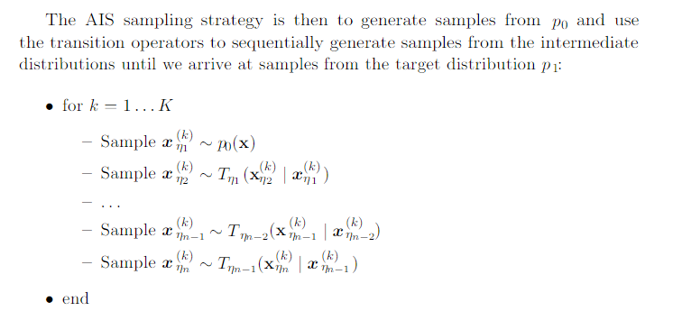

18.7 Estimating the Partition Function¶
eg:
- Model A: \(p_A(x, \theta_A) = \frac{1}{Z_A}\hat{p}_A(x,; \theta_A)\)
- Model B: \(p_B(x, \theta_B) = \frac{1}{Z_B}\hat{p}_B(x,; \theta_B)\)
Suppose the test set consists of m examples \(\{ x^{(1)}, ..., x^{(m)} \}\), if
we say that model A is a better model than model B, in the sense that it has a better log-liekhood. If we knew the ratio of two partition functions, \(r=\frac{Z(\theta_B)}{Z(\theta_A)}\) and we knew that actual value of just one of the two, we could compute the value of the other:
A simple way to estimate the partition function is to use Monte Carlo method such as simple importance sampling:
Proposal distribution: \(p_0 = \frac{1}{Z_0}\hat{p}_0(x)\), which support tractable sampling and tractable evaluation of both the partition function and unnormalized distribution.
So, we make a Monte Carlo estimator, \(\hat{Z}_1\)
This value also allow us to estimate the ratio between the partition function as
- If \(p_0\) is close to \(p_1\): effective way of estimating partition function
- If not, which in most cases, it is difficult to find a tractable \(p_0\) that is simple enough to evaluate while still being close enough to \(p_1\) to result in a high-quality approximation. Most samples from \(p_0\) will have low probability under \(p_1\) and therefore make relatively negative contribution to the sum.
Two strategies to cope with the challenging task of estimating partition functions for complex distribution over high D spaces:
- Annealed Importance Sampling
- Bridge Sampling
Both attempt to overcome the problem of the proposal \(p_0\) being too far from \(p_1\) by introducing intermediate distribution that attempt to bridge the gap between \(p_0\) and \(p_1\) (\(D_{KL}(p_0||p_1)\) is large).
18.7.1 Annealed Importance Sampling¶
Annealed importance sampling attempts to bridge the gap by introducing intermediate distributions: \(p_{\eta_0}, .... p_{\eta_n}\), where \(0=\eta_0< \eta_1 < ... < \eta_n=1\).
We begin with a simpler model with a known partition function and estimate the ratio between the 2 model’s partition functions. The estimate of this ratio is based on the estimate of the ratios of a sequence of many similar distributions, such as the sequence of RBMs with weights interpolating between 0 and the learned weights.
provided the distribution \(p_{\eta_j}\) and \(p_{\eta_{j+1}}\) for all 0<=j<=n-1 are sufficiently close, we can reliably estimate each of the factors \(\frac{Z_{\eta_{j+1}}}{Z_{\eta_j}}\) using simple importance sampling and the use these to obtain an estimation of \(\frac{Z_1}{Z_0}\).
One general purpose and popular choice for the intermediate distribution is to use the weighted geometric average of the target distribution \(p_1\) and the starting proposal distribution \(p_0\):
In order to sample from these intermediate distributions, we define a series of Markov chain transition functions \(T_{\eta_j}(x'|x)\) that define conditional probability distribution of transition to x’ given we are currently at x. The transition operator \(T_{\eta_j}(x'|x)\) is defined to leave \(p_{\eta_j}(x)\) invariant:
Strategy of AIS: generate sample from \(p_0\) and use the transition operator to sequentially generate samples from the intermediate distribution until we arrive at samples from the target distribution \(p_1\):
for sampel k we can derive the importance weight by chaining together importance weights for the jumps between the intermediate distributions
To avoid numerical issues such as overflow, it is probably best to compute \(\log w^{(k)}\) by adding and substracting log probabilities rather than computing \(w^{(k)}\) by multipling and dividing probabilities.
The estimate of ratio of partition function:
AIS is currently the most common way of estimating the partition function for undirected probability models.
18.7.2 Bridge Sampling¶
Bridge sampling relies on a single distribution \(p_*\), known as the bridge to interpolate between a distribution with known partition function, \(p_0\), and a distribution \(p_0\) for whivh we want to estimate the partition function \(Z_1\)
Bridge sampling estimates the ratio as the ratio of the expected improtance weights between \(\hat{p}_0\) and \(\hat{p}_*\), and between \(\hat{p}_*\) and \(\hat{p}_1\)
If the bridge distribution \(p_*\) is chosen carefully to have a large overlap of support with both \(p_0\) and \(p_1\), the bridge sampling can allow the distance between 2 distributions (or \(D_{KL}(p_0||p_1)\)) to be much larger with standard importance sampling.